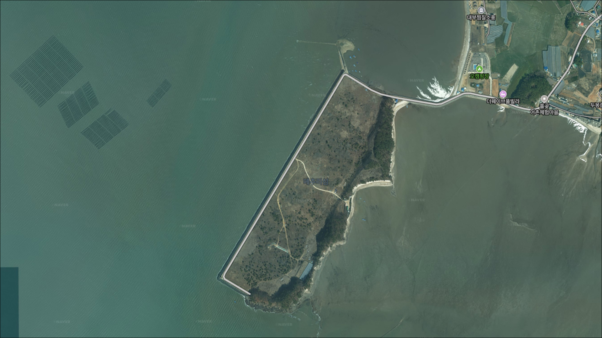
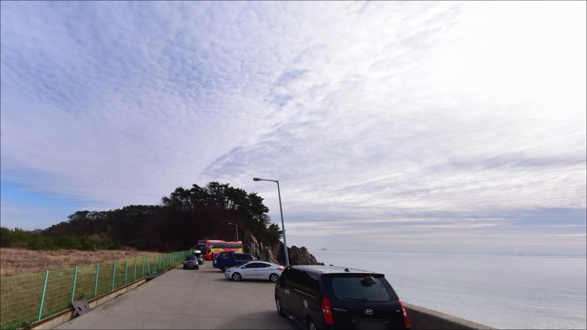
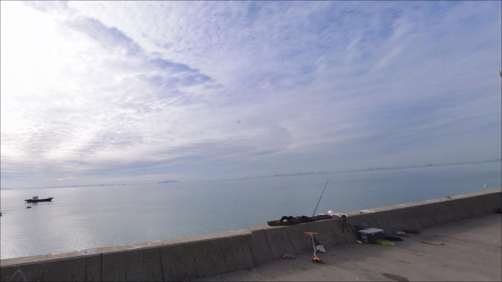
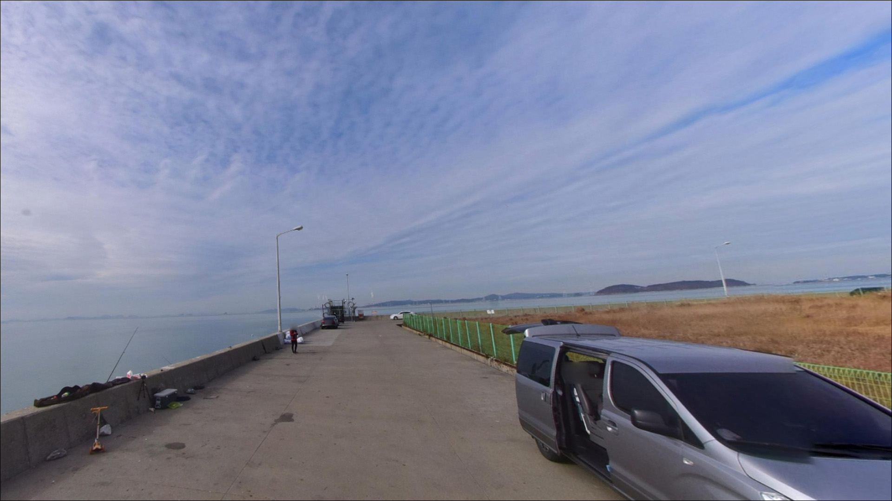
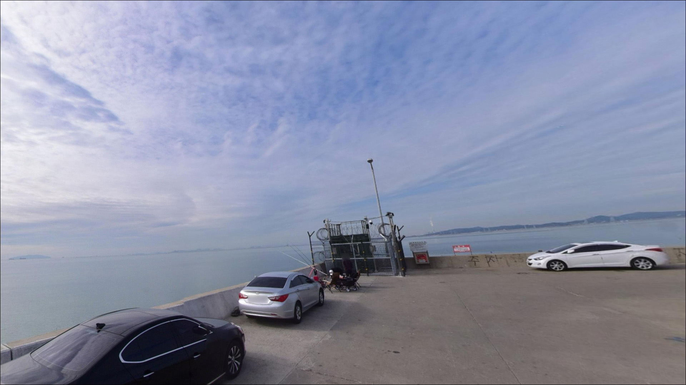
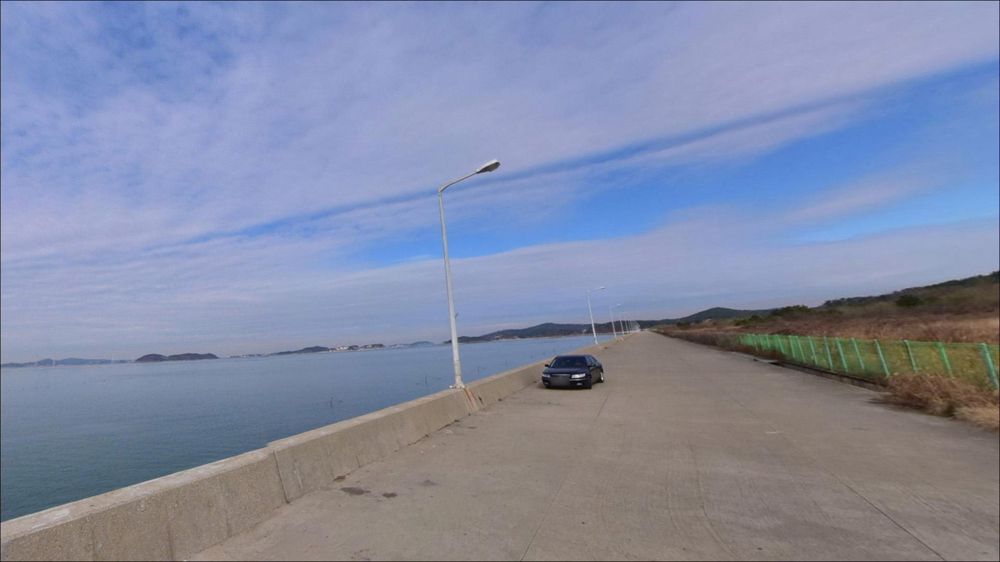
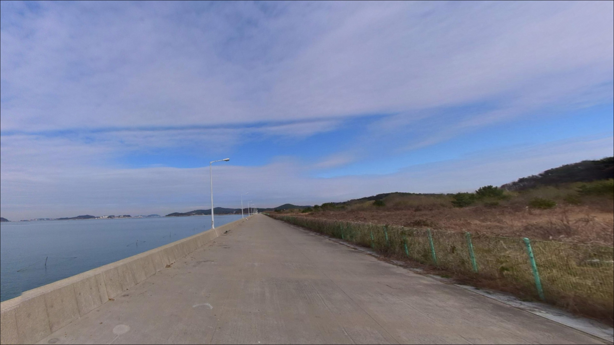
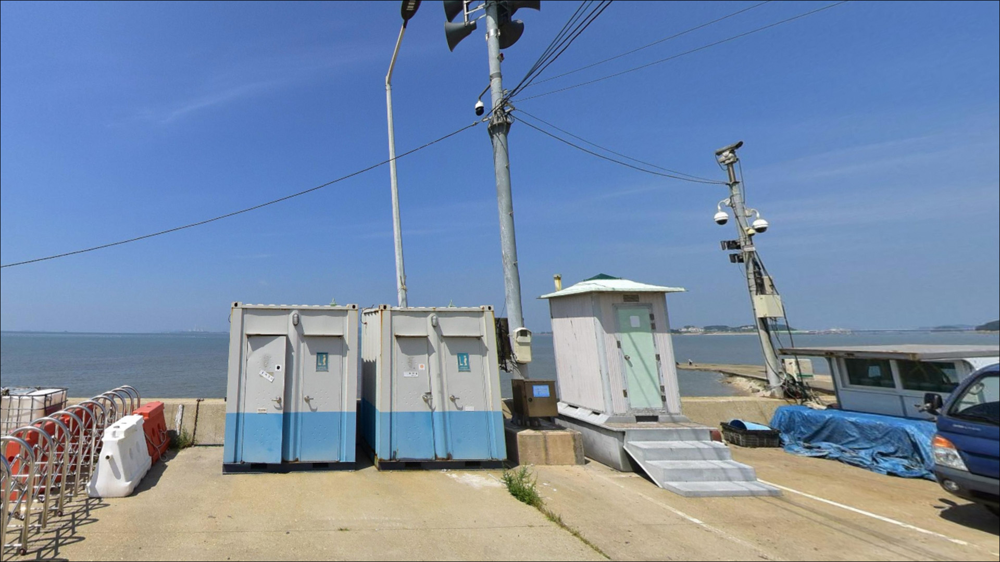
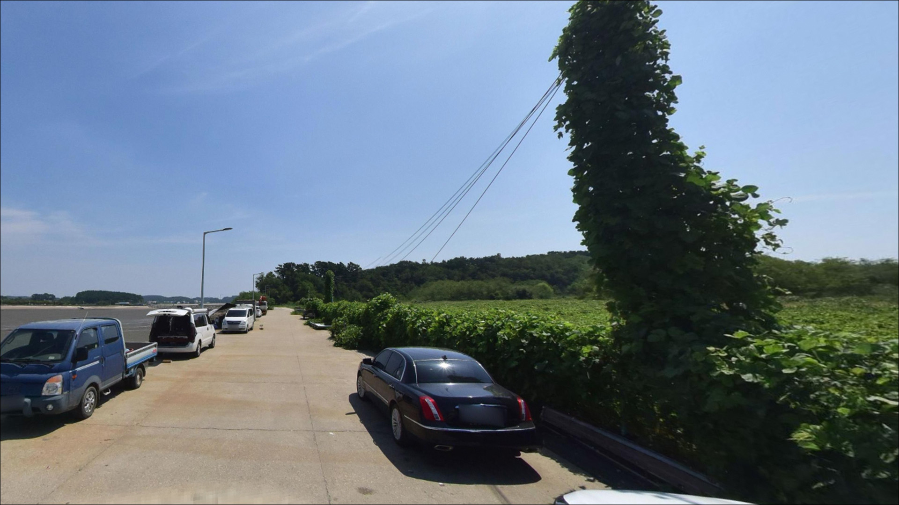

이 페이지에는 광고(제휴 링크 포함)가 있으며, 광고 링크를 통해 구매하면 운영자가 판매 수익 또는 수수료를 받을 수 있습니다. 포인트 사진: 카카오맵 스카이뷰·로드뷰. 이 페이지의 지도·사진 이미지는 카카오맵의 실제 서비스 이미지와 다를 수 있습니다.

메추리섬
경기 안산시 단원구 대부남동 1345-6
메추리섬을 낚시 포인트로 단정하고 채비를 꾸려 방문하면
현장에서 이용 제한 안내를 마주할 가능성이 있습니다.
이 일대는 낚시·차박·취사에 제한이 있다는 내용이
공식 여행 안내에 명시된 이력이 있어,
사전 확인 없이 진입하면 헛걸음이 될 수 있습니다.
대부도 남단 끝자락에 위치한 메추리섬은
간조 때 육지와 연결되고 만조 때 섬이 되는
조간대형 소섬입니다.
흘곶 어촌체험마을이 인근에 있어
갯벌 체험 중심의 관광지 성격이 강하며,
서해 경기만 특유의 넓은 펄 갯벌이
섬 주변을 감싸고 있습니다.
이 글은
메추리섬 일대의 지형 구조와 진입 환경,
서해 갯벌 낚시 여건, 인근 대안 포인트에 집중합니다.
조황 단정과 낚시·차박 허용 여부 단정은
이 글의 범위에 포함되지 않습니다.

메추리섬은 대부도 불굴산 줄기가 서쪽으로 뻗어
마지막에 이르는 지점에 자리합니다.
대부도 남서쪽 끝단에 해당해
외해 방향으로 노출된 구조이며,
서해 경기만 특유의 갯벌과 조간대가 혼합된 지형을
띠고 있습니다.
진입은 대남초등학교 방향에서
섬 쪽으로 이어지는 해안길을 따르는 방식이
알려진 접근 루트입니다.
도로 성격은 시골 농로에 가까워
폭이 좁아지는 구간이 있을 가능성이 있습니다.
캠핑카나 대형 SUV라면 출발 전
위성지도로 진입로를 미리 확인하는 것이 좋습니다.
섬으로 연결되는 방파제 도로 인근이
주차 공간으로 이용된 이력이 있으나,
회차 공간이 넉넉하지 않을 수 있습니다.
후진 진출이 어려운 차량은
방파제 입구 부근에서 여유 공간을 확인하고
진입하는 편이 안전합니다.

메추리섬은 방파제 도로 옆에서 갯벌과 바다를 조망하며
차 옆에 자리를 잡는 구조로
차박 플랫폼에 등록된 이력이 있습니다.
다만 최근에는 관광지 성격이 강해지면서
관리가 강화되는 추세로 보이며,
쓰레기 민원으로 통제가 늘어난 구간이라는
정보가 있어 주의가 필요합니다.
야간에는 가로등 인프라가 제한적일 가능성이 높아
개인 조명 장비는 필수입니다.
대부도 남단 외해 방향에 위치한 구조상
바람 영향을 받기 쉬운 환경이므로,
기상 예보를 확인하고 출발하는 것이 기본 준비입니다.
낚시·차박 이용 가능 여부는
현장 안내판과 최신 제한 사항을 기준으로
다시 확인하는 것이 원칙입니다.
안산시 또는 흘곶어촌계에 방문 전 문의하는 것이
가장 안전한 접근입니다.

메추리섬 인근에는 흘곶 어촌체험마을이 위치하며,
이 마을에서 갯벌 체험 프로그램을 운영할 때
화장실·샤워장·세족장을 이용할 수 있습니다.
다만 이 시설은 체험 프로그램 운영 시간에 한정되므로,
낚시 목적의 단독 방문 시에는
이용 가능 여부를 별도로 확인해야 합니다.
반경 3km 이내에서 편의점이나 식당을
기대하기 어려운 환경입니다.
출발 전 식수, 낚시 소품, 비상약품 등을
완전 자급 체제로 준비하고 출발하는 것이
현실적인 방법입니다.
반경 10km권에서는 대부도 행정복지센터 인근
마트와 편의시설을 이용할 수 있습니다.

메추리섬 방문에서 가장 먼저 확인할 것은
낚시·차박 이용 가능 여부입니다.
공식 여행 안내에 이용 제한이 명시된 이력이 있어,
현재 상황을 방문 전에 파악해 두는 것이 원칙입니다.
안산시청 또는 흘곶 어촌체험마을 운영 측에
전화 문의로 사전 확인하는 것이 좋습니다.
서해안 특성상 조차가 크고,
간조 시 갯벌이 넓게 드러나는 구조입니다.
물때를 확인하지 않으면 낚시 자체가
불가능해지는 상황이 생길 수 있으므로,
바다타임에서 들물·날물 흐름을 사전에 파악하고
출발 시각을 맞추는 것이 기본 준비입니다.
갯벌 지형에서는 썰물 속도가 빠르므로
갯벌 안쪽으로 깊이 진입하지 않는 것이 중요합니다.
야간 낚시 시에는 헤드랜턴과 구명조끼를 반드시 챙기고,
발광 장치와 휴대폰 완충 상태도 확인해야 합니다.
기상 악화 시 방파제 외항쪽 접근은 삼가는 것이 원칙입니다.

메추리섬 주변 해역은 서해 경기만 특유의
갯벌과 간출암이 혼합된 지형입니다.
수심이 1.1~1.5m 수준으로 얕고
저질이 펄 중심이라,
들물 타이밍에 들어오는 물을 활용하는 방식이
이 권역의 기본 낚시 패턴입니다.
간조 전후에는 바닥이 넓게 드러나
어떤 채비를 써도 운용이 어려운 상태가 됩니다.
섬으로 연결되는 방파제 도로의 외항쪽은
내항보다 조류 흐름이 있는 편이며,
회유성 어종이 지나는 경로가 될 수 있는 구조입니다.
만조 전후 2~3시간이 실질적인 낚시 타이밍에
해당하는 포인트입니다.
암초나 방파제 끝단 같은 수심 급변 구간이
뚜렷하지 않아 갯바위 공략은 어려운 구조입니다.
원투낚시로 먼 바닥을 탐색하는 방식이
이 지형에서 현실적인 접근법으로 보입니다.
최신 조황은 방문 전에 반드시 검색해 보시기 바랍니다.

이용 가능 여건이 확인된 전제에서,
이 지형에 가장 잘 맞는 낚시는 원투낚시입니다.
펄 갯벌 구조에서는 들물 타이밍에
채비를 갯벌 경계 너머로 멀리 보낸 뒤
바닥층 어종을 기다리는 방식이
서해 표준 접근법입니다.
망둑어·붕장어가 이 권역에서 자주 언급되는 어종이며,
여름~가을 시즌에 활성이 상대적으로 높아지는
경향이 있습니다.
원투낚시란 무게 있는 봉돌을 달아
채비를 멀리 캐스팅한 뒤
바닥층 어종을 노리는 낚시 방식입니다.
숭어 릴찌낚시도 이 권역에서 가능성이 있는 방식입니다.
갯벌권 수로 구간은 숭어가 들어오는 루트가 될 수 있어,
만조 전후 들물이 살아 있는 타이밍에
수로 방향으로 채비를 흘리는 방식이 어울립니다.
노래미·우럭은 방파제 도로 외항쪽
갯바위 경계 구간에서 루어로 노려볼 수 있는 어종이지만,
갯바위 접근이 제한적인 구조상
공략 범위가 좁은 편입니다.

메추리섬 낚시 여건이 여의치 않거나
이용 제한에 해당할 경우,
가장 먼저 이동할 수 있는 대안은
선재도 방파제입니다.
대부도에서 선재대교를 건너 이동 가능하며,
루어낚시와 찌낚시 포인트로 알려진 곳입니다.
메추리섬과 같은 서해 경기만 해역권으로
지형 패턴이 유사합니다.
선재도에서 조금 더 이동하면
영흥도 진두항 방파제가 있습니다.
이 일대 서해 경기만 권역에서
대표적인 방파제 낚시 포인트로 알려져 있으며,
수심이 선재도 방파제보다 깊은 편이라
다양한 낚시 방식을 운용할 수 있는 구조입니다.
메추리섬이 여의치 않을 때
진두항을 기점으로 이동 동선을 짜는 방식이
이 권역에서 효율적입니다.
탄도항은 대부도 북쪽 화성시 경계 방향으로
이 일대에서 수도권 생활낚시터로 알려진 곳입니다.
수심이 상대적으로 깊어 간조 때도 낚시가 가능하며,
망둑어·숭어·전어 조황이 기록된 곳입니다.
메추리섬 권역이 여의치 않을 때
현실적인 대안 포인트 중 하나입니다.

서해 갯벌형 포인트 특성과
수도권 근접성을 긍정적으로 보는 낚시인이라면
메추리섬 일대가 흥미로운 탐색 대상이 될 수 있습니다.
들물 타이밍을 맞춰 망둑어·붕장어를 노리는 원투낚시나
조류가 살아나는 타이밍의 숭어 릴찌낚시를 즐기는 분이라면
지형 조건 자체는 어울리는 구조입니다.
반면 편의시설이나 안정적인 주차 여건을 기대하는 경우,
혹은 별도 확인 없이 바로 채비를 풀고 싶은 경우라면
이 포인트는 맞지 않습니다.
이용 가능 여부 사전 확인 없이 방문하면
헛걸음이 될 가능성이 높은 곳입니다.
선재도 방파제나 영흥도 진두항을 플랜 B로 준비해 두는 것이
이 권역 출조의 기본 전략입니다.
물때와 이용 여건, 두 가지를 확인하고
플랜 B까지 갖춰 두는 것이
메추리섬 권역 출조에서 가장 기본이 되는 준비입니다.
갯벌 앞에서 하룻밤을 보내는 차박 여행자라면,
이용 허용 여부와 기상이 맞아떨어지는 날을 골라
서해의 조용한 밤을 즐길 수 있는 포인트입니다.